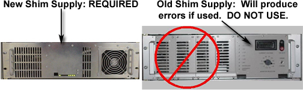
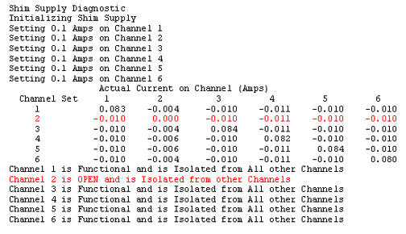

Proprietary to General Electric Company
Direction 5670006, Rev# 1
Discovery MR750w GEM Service Methods
Module Version 1.0, Version Date 4/26/07
Proprietary to General Electric Company |
Diagnostics >> Peripherals >> Shim Supply Diagnostics
This diagnostic ensures each channel can be set to the preset current (100mA) and that the channel (a) has the desired current; (b) has the proper polarity; and (c) is isolated (i.e. no crosstalk) between other channels.
This diagnostic is part of the Shim Supply Diagnostics that comprise the series of tests that verify & display various Shim Supply values by communicating from the SCP to the Shim Supply via the CAN link.
Set the Test Duration to the number of seconds desired.
Select the Shim Circuit Continuity Check radio button, then press the [Run] button.
Examine the display results.
Shim Supply
Coil Channels
RTD Channels
Software Configuration
Standard Software
CAN communications NOT emulated
Hardware Configuration
MGD Chassis: SCP, AGP, and APS Processor boards. Bridge board
Shim Supply, cabling, etc
Illustration 1: Shim Supply Requirements

Illustration 2: SHIM Supply Block Diagram

The Operator selects the Shim Circuit Continuity Check radio button, then presses the [Run] button.
The Diagnostic issues a commandb that turns the Shim Supply’s fault monitoring off.
The Diagnostic then loops through each channel, setting a single channel to 100mA and all others to 0.0mA. For each iteration (corresponding to setting a channel to 100mA), the Diagnostic issues a command that sets the current for each of the Shim Supply’s channels. Another command is issued that instructs the Shim Supply to return the present current for each coil channel.
The Diagnostic issues a command that sets the current on each channel to zero.
The Diagnostic displays the results
| NOTE: | The Shim Supply is first checked to ensure it is in the proper state. Commands to the Shim Supply are issued via the CAN interface on the SCP. |
The sample output in Illustration 3 exemplifies test output. Input errors, Shim Supply State errors, and test condition errors are indicated in red.
The table displays the channels’ current measurements and a textual description of good & bad channels. In this sample, channel 2 failed to read back ~100mA.
Illustration 3: Sample Test Output
